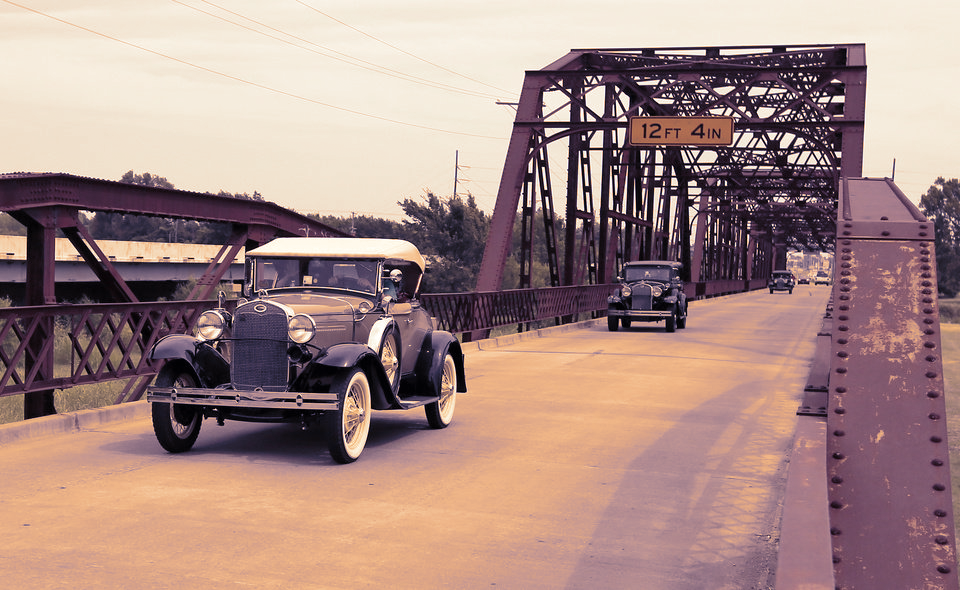

Historic Route 66
The Lake Overholser Bridge in Oklahoma City is a proud reminder of Route 66. During the early 1920s, automobiles were replacing horses and buggies on Oklahoma roads which, at that time, were not part of an organized system but were instead an assortment of poorly maintained lanes connecting rural villages to county seats. Navigating from one part of Oklahoma to another was not always easy. The development of a State highway system and the coming of Route 66 changed all that.
In 1924, the State Highway Commission made a bold move. The commission published a State road map showing Oklahoma’s 5,000 miles of road and labeling them as highways identified by numbers 1 to 26. The map described each State highway by the towns through which it passed. The commission also determined that each highway was to be marked by a sufficient number of official State highway signs, in the center of which would be a figure denoting the number of the highway.
New Construction begins
One of these new State highways was old Highway 3, which ran east and west from Fort Smith, Arkansas, to Texola on the Texas border over a different route than today’s Highway 3. Known also as the Postal Road, Highway 3 was a primary corridor stretching across Oklahoma, but very little of it had pavement. What little pavement there was on Highway 3 washed away along with every bridge in the Oklahoma City area during the massive floods of 1923. For two years, traffic on the Postal Road had to use a ferry to cross the Canadian River where it emptied into Oklahoma’s water reservoir, the Overholser Lake.
The need for a new bridge was obvious. Construction of the Overholser Bridge began in 1924 and the bridge opened for traffic in August of 1925. Accommodating a wide bed of 20 feet for traffic, the Overholser was no ordinary bridge. The engineers who designed it not only used the new steel truss technology, but also combined a variety of trusses in unusual ways. With both Parker through trusses and pony trusses, the 748-foot bridge is not only an unusual design, but a balanced and elegant one. The Bridge was no sooner finished than its status began to change. The local press reported that the old Highway 3 was being considered as part of one of the routes to be designated a U.S. Highway.When the path of Route 66 was announced the next year, Highway 3 was part of the plan. When Route 66 left Oklahoma City, it carried travelers over the Lake Overholser Bridge.
Traveling America's Mother Road
Into the future
For more than three decades the bridge served as a critical link for motorists traveling across the State and country. Some were vacationers, others crossed this bridge with hopes of finding better lives further west, and others were part of the trucking industry which was rapidly replacing rail transport. The volume was tremendous. By the 1950s, the bridge could not sustain this level of constant traffic. Heavily chromed cars with shapely fins had to sit too long at the bottleneck the bridge had become. In 1958, the Federal Government took action, replacing this segment of Route 66 with a new four-lane divided highway just to the north. The new section included a wider bridge, while local traffic continued to pass over the Lake Overholser Bridge.
Today it carries only local traffic, yet the symmetry and size of the old bridge still catch the eye of drivers speeding by on the more recent replacement lanes just north of the bridge. Officially, the Overholser Bridge lost its association with Route 66 in 1958, but its size and symmetry and long-time service as part of old Route 66, make it a landmark today for anyone traveling America’s Mother Road. The bridge was listed on the National Register of Historic Places in 2004.